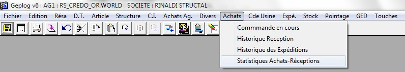
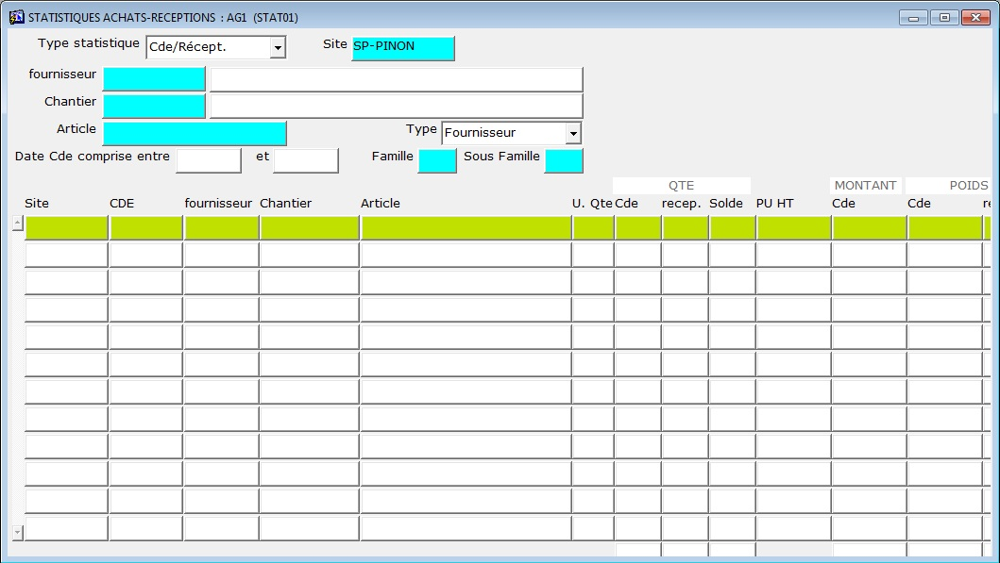
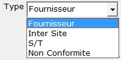
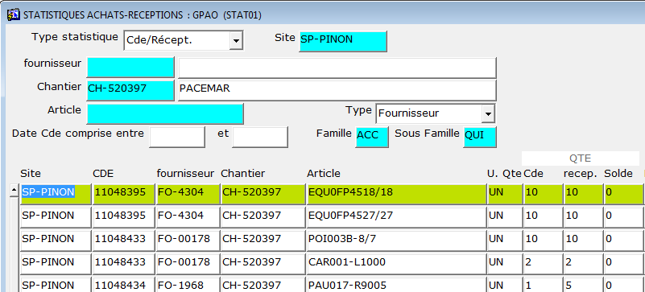

|


Cet écran permet de consulter les achats et réceptions par type de
cde achat

Attention : le site correspond au site de production : SP-PINON dans
99% des cas.
Consultation des commandes :
- Saisir les informations d'entête connues, CDE, Site, Responsable,
etc;
- Valider par entrée la dernière zone fait s'afficher la liste des
commandes correspondantes aux filtres
Exemple :
Pour trouver toutes les quincailleries achetées et affectées
directement sur le chantier Pacemar
note : si le code de l'article ne vous dit rien, vous trouverez son
libellé dans une colonne sur la droite.

Identification des zones:
| Champ |
Désignation |
| Site |
Code du site
destinataire de la commande |
| CDE |
Numéro de commande achat |
| Fournisseur |
Code fournisseur |
| Chantier |
Code chantier (CH-xxxxx) |
| Article |
Code article |
| U.Qté |
|
| Cde |
Selon votre
code utilisateur vous pourrez consulter, les quantités, les prix,
les poids, les surfaces. |
| Réception |
| Solde |
|
|
|